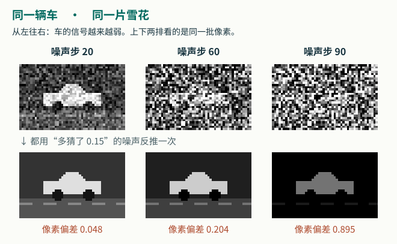
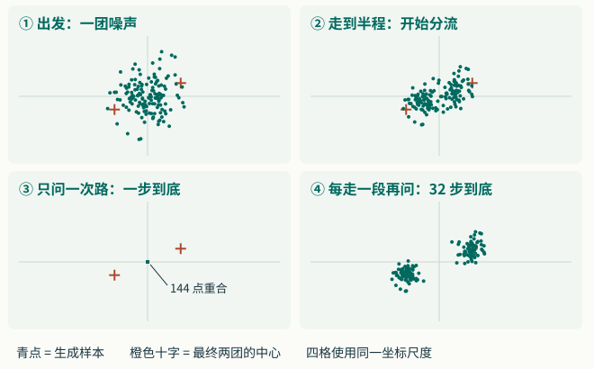
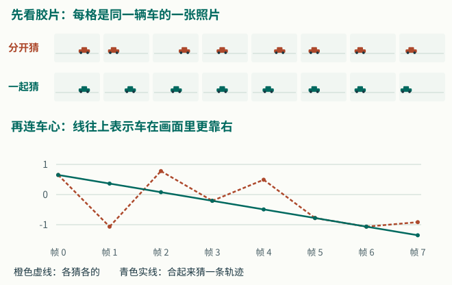
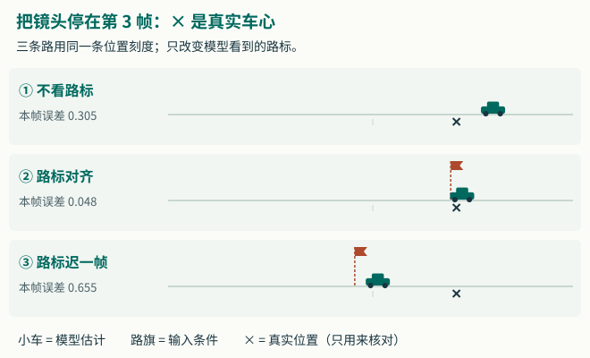

种子 17 | 流匹配终点对照 32 步 | 条件支路更新 80 次 · 查看原始指标

上排加噪，下排用偏差为 0.15 的噪声估计倒推。偏差为零时可还原原车；不为零时，高噪声会放大误差。

看左下和右下：从同一批点出发，改变问路次数。把 --flow-steps 改为 1，两格应重合。

沿虚线读八帧的位置，再沿实线读。数字的二阶差分只适合本例匀速轨迹，停着不动也会得零。

看车心与 × 的距离，再看旗子。将 --updates 改为 0，三行小车应在同一位置；路旗本身不会移动车。